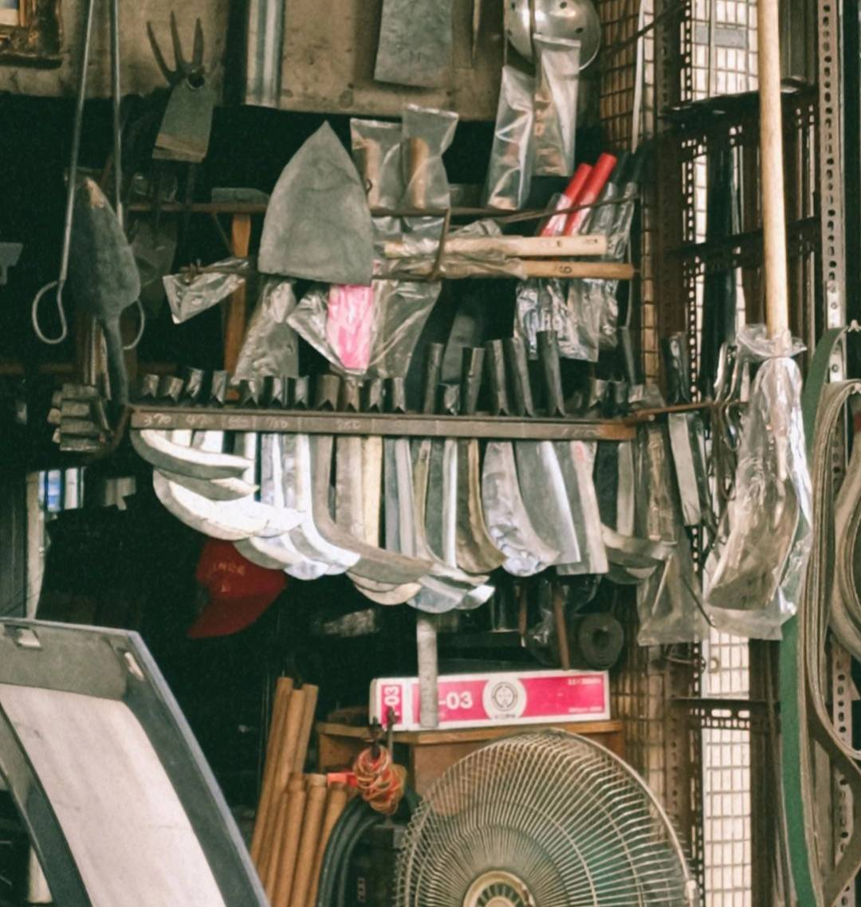

南屯介紹

台中市的南屯區，舊稱「犁頭店」，為現臺中市最早開發的地區之一。 此地原有許多製造農具的打鐵店，其中以犁頭最為出名，地名遂改為犁頭店，稱為犁頭店街。 與大里杙（今大里）、葫蘆墩（今豐原）合稱臺中三大聚落，同屬臺中盆地開發最早的區域。 而南屯區最早開發的區域則屬以與萬和宮相連的南屯老街，南屯老街又名犁頭店街，因康熙年間開設犁頭店而得名，是台中市最先被先民開發的地區，沿著老街前行也能看到許許多多的老店，其中有名的林金生香餅店創立至今已有144年的歷史，是一間名副其實的百年老店，創始人一開始是以製麵為主，不過後來慢慢改為餅店，並且在糕點添加創意融入當地特有食材麻薏，創造出各種有關麻薏的糕點，這樣的創意不僅保留了原有的味道還多添了幾分獨特的魅力。

林金生香餅店罔前走一會，就會看到在路口轉角處的三角街口。 雖然現今是有四條路的十字路口，但早期是名副其實的只有三條路，現通往黎明路的路原先並不存在，而是後來配合都市規劃打通。 外觀是初看是華麗的巴洛克式建築，但再仔細看，則能看到中國和日本的建築風格。 它完全的體現了東西方建築特色的完美結合，更是記載了當時期臺灣島上形形色色的人種共同活躍於此地，象徵了此地繁華的盛況與接納不同文化的多元融合，極具歷史價值，也供我們做出人文思考與省思。